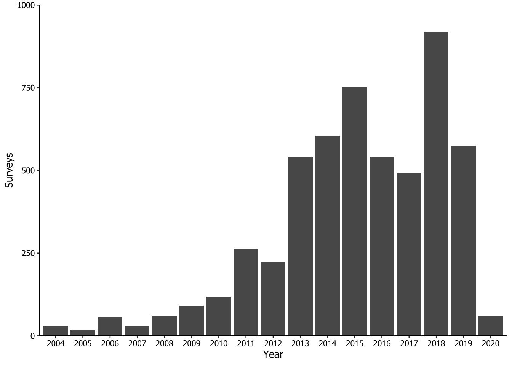
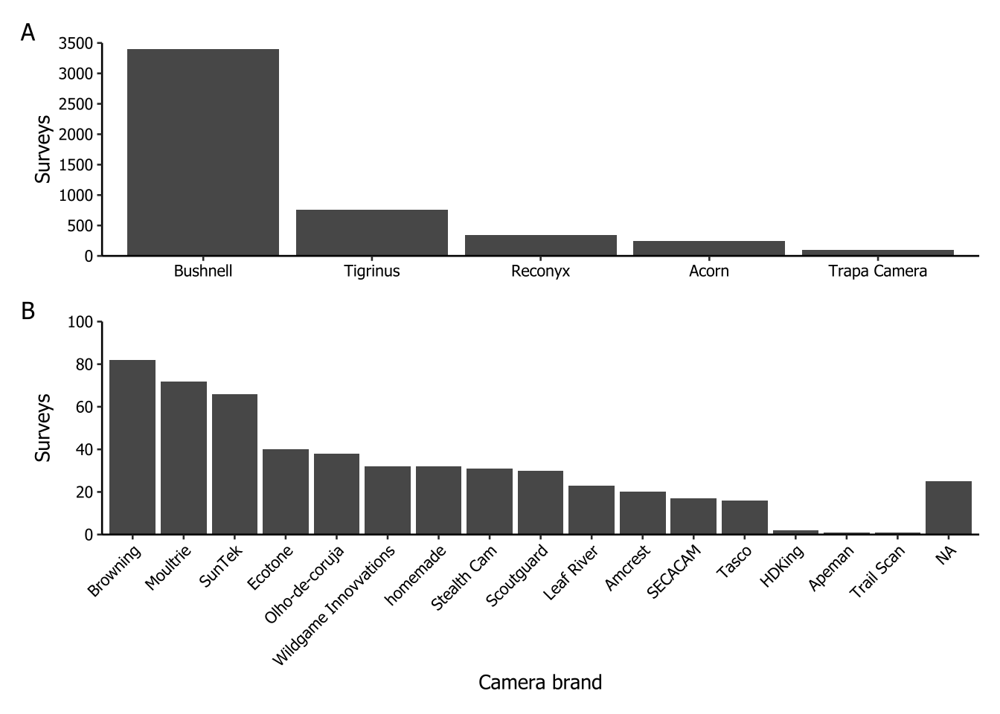
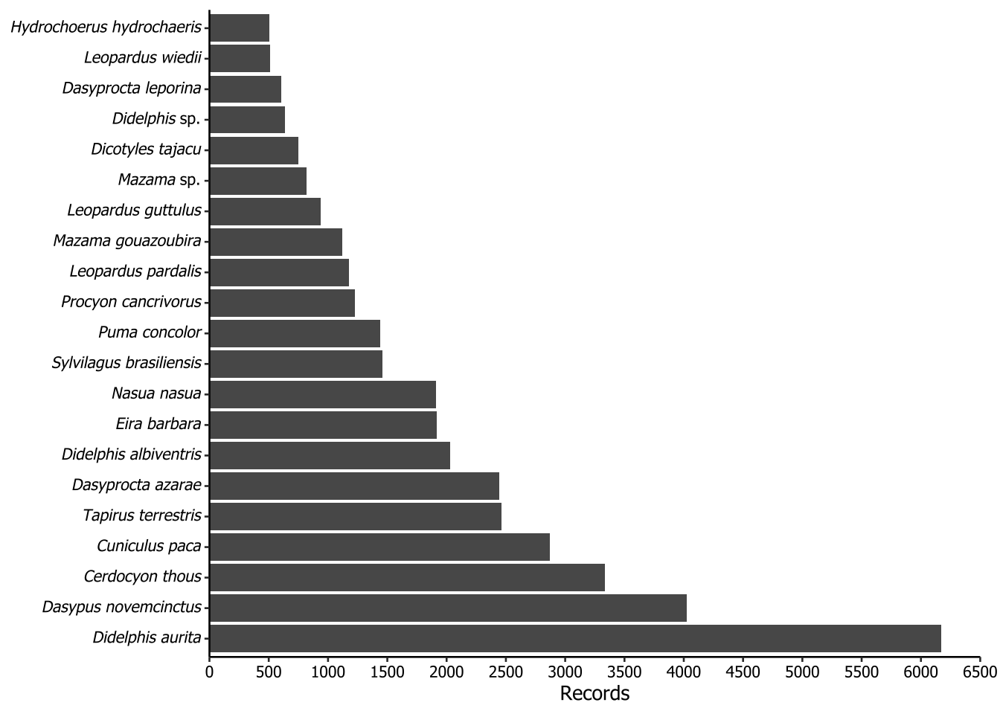
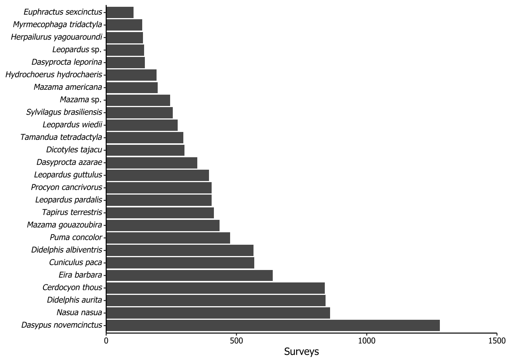
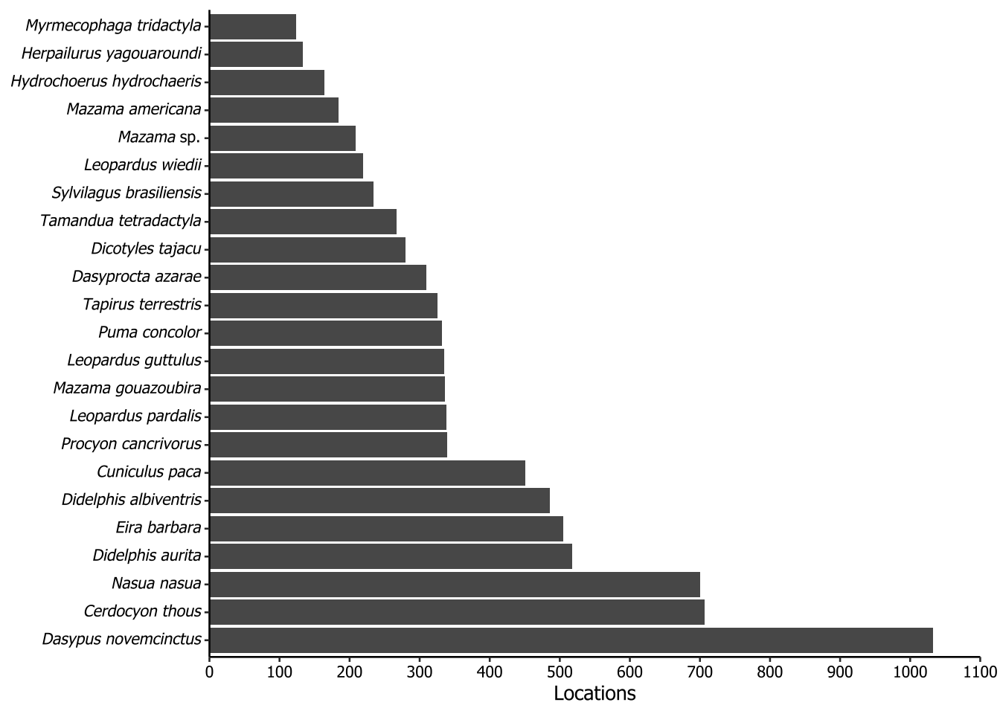
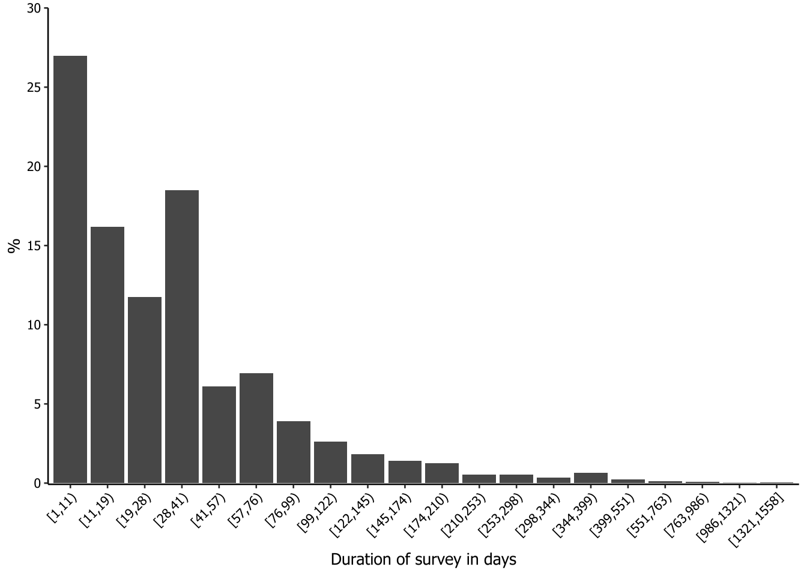

sysfonts::font_add("Datapaper",
regular = "/System/Library/Fonts/Supplemental/Tahoma.ttf",
italic = "/Users/rubemdornas/Library/Fonts/Tahoma-Italic.ttf")
showtext::showtext_auto()Plot creation - Camera trap surveys of Atlantic Forest mammals: a dataset for analyses considering imperfect detection (2004-2020)
1 Purpose
The purpose of this document is to guide the datapaper reader towards understanding how we have developed computational codes to generate the descriptive results presented in the datapaper. This initiative was suggested by the editor from Ecology who was responsible to evaluate this paper.
2 Starting notes
To enhance the understanding and utilization of this document, we have chosen to adopt the four-dots (::) notation as a standard practice. In this notation, the package name is placed on the left-hand side, while the name of the respective function is on the right-hand side. For instance, dplyr::count indicates the use of the count function from the dplyr package. When we utilize native R functions, we have chosen not to use the double colon (::) notation.
Whenever possible, we employ the native pipe operator (|>) to chain lines of code, instead of relying on the standard R approach or the almost deprecated magrittr pipe (%>%).
3 Preparation steps
For creating the plots, we used a specific font type, namely Tahoma. However, you are free to use any font of your choice.
To begin, it is essential to have the fonts installed on your PC. In this instance, we downloaded the Tahoma font from the web in both its regular and italic (faux italic) styles. After installing these fonts, we copied their file paths on our PC and assigned them to their respective font faces using the sysfonts::font_add function. In this case, we named the imported fonts as “Datapaper”. To make these external fonts available for use, you should execute the code showtext::showtext_auto() function in the specified sequence.
The next step in creating the graphs was to define a theme that includes some attributes meant to be applied consistently across all plots. Consequently, we developed a theme function named theme_datapaper to be used in conjunction with the generated ggplot2 graphs.
# Creating a ggplot theme for the graphs ----
theme_datapaper <- function(base_family = "Datapaper", base_size = 10) {
ggplot2::theme_classic(base_size = base_size,
base_family = base_family) + #replace elements we want to change (font size and family)
ggplot2::theme(axis.text = ggplot2::element_text(color = "black")) #defining color of axis text)
}4 Reading data files
Each graph begins by loading the datasets. In this case we are importing two datasets: the survey file dataset (DATASET_CAMTRAP_SURVEYS_ATLANTICFOREST.csv) and the record file dataset (DATASET_CAMTRAP_RECORDS_ATLANTICFOREST.csv). Since the columns in the CSV files are separated by semicolon (;), we are using the read_csv2 function. This function is similar to read_csv, with the only difference being that it treats the semicolon (;) as the delimiter instead of a comma (,). These functions, which belong to the readr package, automatically infer and exhibit the column specifications after reading the files.
For the surveys dataset, we created a ‘year’ column because this field will be used in several of the subsequent plots.
surveys <- readr::read_csv2("DATASET_CAMTRAP_SURVEYS_ATLANTICFOREST.csv") |>
dplyr::mutate(year = as.factor(lubridate::year(surveyDateStart)))ℹ Using "','" as decimal and "'.'" as grouping mark. Use `read_delim()` for more control.Rows: 5380 Columns: 15
── Column specification ────────────────────────────────────────────────────────
Delimiter: ";"
chr (8): surveyId, locationId, cameraModel, bait, surveyPhoto, geodeticDatu...
dbl (2): surveyDays, speciesRecorded
num (2): decimalLatitude, decimalLongitude
date (3): surveyDateStart, surveyDateEnd, firstRecordDate
ℹ Use `spec()` to retrieve the full column specification for this data.
ℹ Specify the column types or set `show_col_types = FALSE` to quiet this message.records <- readr::read_csv2("DATASET_CAMTRAP_RECORDS_ATLANTICFOREST.csv")ℹ Using "','" as decimal and "'.'" as grouping mark. Use `read_delim()` for more control.
Rows: 43068 Columns: 7── Column specification ────────────────────────────────────────────────────────
Delimiter: ";"
chr (2): surveyId, scientificName
dbl (1): recordCriteria
num (2): decimalLatitude, decimalLongitude
date (1): recordDate
time (1): recordTime
ℹ Use `spec()` to retrieve the full column specification for this data.
ℹ Specify the column types or set `show_col_types = FALSE` to quiet this message.5 Creating plots
5.1 Number of camera trap surveys per year
This code corresponds to Figure 2 in the paper. The aim here was to create a bar graph that illustrates the distribution of 5,380 surveys from 2004 to 2020 within the Atlantic Forest biome.
surveys |>
ggplot2::ggplot(ggplot2::aes(x = year,
stat = "count")) + #graph of counting
ggplot2::geom_bar() + #graph of bar
ggplot2::labs(x = "Year",
y = "Surveys") + #editing the y and x legend
ggplot2::scale_y_continuous(expand = c(0, 0),
limits = c(0, 1000)) + #defining the axis y limits and spaces from the borders
theme_datapaper()
We save the plot created using ggplot2::ggsave() function. There is no need to explicitly specify which plot we intend to save since, when it’s not informed, it defaults to the last generated plot. We have configured the plot to be 9 cm in height and 16 cm in width, with a dpi resolution of 320 (‘retina’) by using a combination of arguments in the function. The reader is free to adjust these values to suit their specific requirements. As all the procedures for saving plots are the same, we will not repeat this code throughout the document.
ggplot2::ggsave(
filename = "fig2.tiff",
width = 16,
height = 9,
units = "cm",
dpi = "retina"
)5.2 Brands of camera trap
This plot corresponds to Figure 3 in the paper. It was the most complex graph to create due to the presence of multiple camera models within each brand, rather than just the brand itself. Consequently, we decided to repeatedly use stringr::str_detect() within a dplyr:case_when() statement to identify the specific pattern of each brand and populate a new column with the brand names.
In the sequence, we calculated the number of surveys for each camera brand, ordering them in descending order within a column called n_cameraBrand. Recognizing a significant disparity in the number of camera traps used across brands, we opted to show the results in two separated plots. The first plot (letter ‘A’) features brands with 100 surveys or more, while the second plot (‘B’) includes all the other brands.
camera_class <- surveys |>
dplyr::mutate(
cameraBrand = dplyr::case_when(
stringr::str_detect(cameraModel, "Acorn") ~ "Acorn",
stringr::str_detect(cameraModel, "Amcrest") ~ "Amcrest",
stringr::str_detect(cameraModel, "Apeman") ~ "Apeman",
stringr::str_detect(cameraModel, "Browning") ~ "Browning",
stringr::str_detect(cameraModel, "Bushnell") ~ "Bushnell",
stringr::str_detect(cameraModel, "HDKing") ~ "HDKing",
stringr::str_detect(cameraModel, "Leaf") ~ "Leaf River",
stringr::str_detect(cameraModel, "Moultrie") ~ "Moultrie",
stringr::str_detect(cameraModel, "Reconyx") ~ "Reconyx",
stringr::str_detect(cameraModel, "Scoutguard") ~ "Scoutguard",
stringr::str_detect(cameraModel, "SECACAM") ~ "SECACAM",
stringr::str_detect(cameraModel, "Stealth") ~ "Stealth Cam",
stringr::str_detect(cameraModel, "SunTek") ~ "SunTek",
stringr::str_detect(cameraModel, "Tasco") ~ "Tasco",
stringr::str_detect(cameraModel, "Trail Scan") ~ "Trail Scan",
stringr::str_detect(cameraModel, "Trapa") ~ "Trapa Camera",
stringr::str_detect(cameraModel, "Tigrinus") ~ "Tigrinus",
stringr::str_detect(cameraModel, "Wildgame") ~ "Wildgame Innovvations",
stringr::str_detect(cameraModel, "homemade") ~ "homemade",
TRUE ~ cameraModel
)
) |>
dplyr::count(cameraBrand,
sort = TRUE,
name = "n_cameraBrand") |> # tallying by camera model, ordering descending
dplyr::mutate(cameraBrand = forcats::as_factor(cameraBrand), #setting as factor to keep order
fig = dplyr::if_else(n_cameraBrand >= 100, "A", "B") #identifying camera model with more than 100 records as 'A' and less as 'B'
)
camera_class# A tibble: 22 × 3
cameraBrand n_cameraBrand fig
<fct> <int> <chr>
1 Bushnell 3400 A
2 Tigrinus 763 A
3 Reconyx 338 A
4 Acorn 249 A
5 Trapa Camera 102 A
6 Browning 82 B
7 Moultrie 72 B
8 SunTek 66 B
9 Ecotone 40 B
10 Olho-de-coruja 38 B
# ℹ 12 more rowsThen, we created new objects, namely ‘camera_figA’ and ‘camera_figB’, for each figure, simply by filtering based on the respective letter. Subsequently, we created a ggplot2 graph for each of the letters within objects named ‘fig3A’ and ‘fig3B’. Finally, we used the patchwork package to arrange the graphs on top of each other using the /. It is worth noting that for correct use of patchwork package in this context, you must load the package into memory by using library(patchwork).
# Filtering camera brands by letter
camera_figA <- camera_class |>
dplyr::filter(fig == "A")
camera_figB <- camera_class |>
dplyr::filter(fig == "B")
# Creating ggplot graphs for each letter
fig3A <- camera_figA |>
ggplot2::ggplot() + #plotting the camera models most used
ggplot2::geom_col(ggplot2::aes(x = cameraBrand,
y = n_cameraBrand)) + #organizing the camera model by counting
ggplot2::labs(x = NULL,
y = "Surveys") + #identifying the axis y as the axis of surveys
ggplot2::scale_y_continuous(
expand = c(0, 0),
limits = c(0, 3500),
breaks = seq(0, 3500, by = 500)
) + #defining the axis y breaks, limits and spaces from the borders
theme_datapaper()
fig3B <- camera_figB |>
ggplot2::ggplot() + #plotting the camera models less used
ggplot2::geom_col(ggplot2::aes(x = cameraBrand,
y = n_cameraBrand)) + #organizing the camera model by counting
ggplot2::labs(x = "Camera brand",
y = "Surveys") + #identifying the axis y as the axis of surveys
ggplot2::scale_y_continuous(
expand = c(0, 0),
limits = c(0, 100),
breaks = seq(0, 100, by = 20)
) + #defining the axis y breaks, limits and spaces from the borders
theme_datapaper() +
ggplot2::theme(axis.text.x = ggplot2::element_text(angle = 45,
hjust = 1))
# Assembling the plots with patchwork
fig3A / fig3B +
patchwork::plot_annotation(tag_levels = "A")
5.3 Taxa greater (or equal) than 500 records
The result of the following code is not included in the paper. The purpose of this plot is to show the most frequently recorded species, filtering for those greater (or equal) than 500 records. To properly render the scientific names in italics, we applied a workaround using Markdown notation. To make the axis text italic for species names, we implemented a rule: if the second word in the scientific name was ‘sp.’, it would apply underscores (_) only to the first word. However, if the second word was not ‘sp.’, then the entire scientific name should be enclosed in underscores. In Markdown notation, underscores italicize the enclosed text. To ensure ggplot recognize the underscores as Markdown, we used the ggtext::element_markdown() function.
records |>
dplyr::count(scientificName, sort = TRUE) |> #counting in the record file the record number of each species
dplyr::filter(n >= 500) |>
dplyr::mutate(scientificName = dplyr::if_else(condition = stringr::word(scientificName, 2, 2) == "sp.",
true = sprintf("_%s_ %s", stringr::word(scientificName, 1, 1),
stringr::word(scientificName, 2, 2)),
false = sprintf("_%s_", scientificName)),
scientificName = forcats::as_factor(scientificName)) |> #setting scientificName as a factor with the current ordering
ggplot2::ggplot() +
ggplot2::geom_col(ggplot2::aes(x = scientificName, y = n)) +
ggplot2::scale_y_continuous(
expand = ggplot2::expansion(mult = 0),
limits = c(0, 6500),
breaks = seq(0, 6500, by = 500)
) + #defining the axis y breaks, limits and spaces from the borders
ggplot2::labs(x = NULL,
y = "Records") + #identifying the axis y as the axis of records
ggplot2::coord_flip() + #changing the axis y and x
theme_datapaper() +
ggplot2::theme(
plot.margin = ggplot2::margin(t = 5,
r = 10,
b = 5,
l = 5,
unit = "pt"), #to exhibit the flipped axis y text
axis.text.y = ggtext::element_markdown()
)
5.4 Taxa recorded in more than 100 surveys
The result of the following code is not included in the paper. The purpose of this plot is to show the most frequently recorded species considering the surveys as sample unit, filtering for those greater (or equal) than 100 records. The preparations to italicize scientific names was the same as in Section 5.3.
records |>
dplyr::distinct(scientificName, surveyId) |>
dplyr::count(scientificName, sort = TRUE) |>
dplyr::filter(n >= 100) |>
dplyr::mutate(scientificName = dplyr::if_else(
condition = stringr::word(scientificName, 2, 2) == "sp.", #to make axis text italic for species names using Markdown notation
true = sprintf("_%s_ %s", stringr::word(scientificName, 1, 1), #use italic just in the first word
stringr::word(scientificName, 2, 2)),
false = sprintf("_%s_", scientificName)
), #otherwise, use italic in full name
scientificName = forcats::as_factor(scientificName)) |> #setting scientificName as a factor
ggplot2::ggplot() +
ggplot2::geom_col(ggplot2::aes(x = scientificName, y = n)) + #organizing the scientific name
ggplot2::scale_y_continuous(
expand = ggplot2::expansion(mult = 0),
limits = c(0, 1500),
breaks = seq(0, 1500, by = 500)
) + #defining the axis y breaks, limits and spaces from the borders
ggplot2::labs(x = NULL,
y = "Surveys") + #identifying the axis y as the axis of surveys
ggplot2::coord_flip() + #changing the axis y and x position
theme_datapaper() +
ggplot2::theme(
plot.margin = ggplot2::margin(t = 5,
r = 10,
b = 5,
l = 5,
unit = "pt"), #to exhibit the flipped axis y text
axis.text.y = ggtext::element_markdown() #to make axis text italic for species names
)
5.5 Taxa recorded in more than 100 camera locations
The result of the following code is not included in the paper. The purpose of this plot is to show the distribution of taxa across the locations where cameras were installed throughout our dataset. With that in mind, we began by joining the surveys and records table by the surveyId column, as the fields of interest locationId and scientificName were in different tables. Each locationId consists in a pair of coordinates, and then it was used in the distinct function together with the scientificName field. After that, we counted how many times each scientific name appeared, filtered the NA (because we had some locationId did not have any species) and the species which the count sum was equal or greater than 100. All the specifics concerning italicizing were already described in Section 5.3.
surveys |>
dplyr::left_join(records, by = "surveyId") |>
dplyr::distinct(locationId, scientificName) |>
dplyr::count(scientificName, sort = TRUE) |>
dplyr::filter(!is.na(scientificName),
n >= 100) |>
dplyr::mutate(scientificName = dplyr::if_else(
condition = stringr::word(scientificName, 2, 2) == "sp.",
true = sprintf("_%s_ %s", stringr::word(scientificName, 1, 1), stringr::word(scientificName, 2, 2)),
false = sprintf("_%s_", scientificName)
),
scientificName = forcats::as_factor(scientificName)) |>
ggplot2::ggplot() +
ggplot2::geom_col(ggplot2::aes(x = scientificName, y = n)) +
ggplot2::scale_y_continuous(
expand = ggplot2::expansion(mult = 0),
limits = c(0, 1100),
breaks = seq(0, 1100, by = 100)
) +
ggplot2::labs(x = NULL,
y = "Locations") +
ggplot2::coord_flip() +
theme_datapaper() +
ggplot2::theme(
plot.margin = ggplot2::margin(t = 5,
r = 10,
b = 5,
l = 5,
unit = "pt"),
axis.text.y = ggtext::element_markdown()
)
5.6 Surveys’ duration in days
The result of the following code is not included in the paper. We were interested in having a histogram-like plot to check the duration of the surveys. However, since most of the surveys were less than 100 days long, the surveys with longer durations were almost disappearing in the generated graphs.
To address this issue, we decided to apply a Fisher-Jenks approach to segment the classes in a way that the data could be better shown and interpreted. Fisher-Jenks is a popular method for data segmentation into statistically derived classes, so that the variation between classes is maximized and the variation within classes is minimized. We used the classIntervals function from the classInt package to segment the data into classes, passing the argument style = "fisher". We decided to divide the data into 20 groups (n = 20) and, since we are dealing with integers (number of days), we chose to use dataPrecision = 0. The result of the processing is a table of the groups, comprising the minimum and the maximum number of days inside an open square bracket (≥) and a closing parenthesis (<), and the count for each group. To make this table available for further steps, we saved it in a new object using a hack with print and []. After this, we simply had to call it as a data frame and rename the columns.
intervals <- classInt::classIntervals(
var = surveys$surveyDays,
n = 20,
style = "fisher",
dataPrecision = 0,
cutlabels = FALSE,
between = "-"
)
class_results <- print(intervals)[] |>
as.data.frame() |>
setNames(c("value", "n"))style: fisher
[1,11) [11,19) [19,28) [28,41) [41,57) [57,76)
1451 870 632 995 329 374
[76,99) [99,122) [122,145) [145,174) [174,210) [210,253)
211 140 99 75 68 29
[253,298) [298,344) [344,399) [399,551) [551,763) [763,986)
28 18 36 12 6 4
[986,1321) [1321,1558]
1 2 # Calling the results after transforming to data frame
class_results value n
1 [1,11) 1451
2 [11,19) 870
3 [19,28) 632
4 [28,41) 995
5 [41,57) 329
6 [57,76) 374
7 [76,99) 211
8 [99,122) 140
9 [122,145) 99
10 [145,174) 75
11 [174,210) 68
12 [210,253) 29
13 [253,298) 28
14 [298,344) 18
15 [344,399) 36
16 [399,551) 12
17 [551,763) 6
18 [763,986) 4
19 [986,1321) 1
20 [1321,1558] 2We now need to create a new column to set the frequency of each class. This is done to ensure that the maximum value on the y-axis is not too high, so that even classes with a small share of the duration will be visible on the graph.
class_results |>
dplyr::mutate(freq = n / sum(n) * 100) |>
ggplot2::ggplot(ggplot2::aes(x = value, y = freq)) +
ggplot2::geom_col() +
ggplot2::labs(x = "Duration of survey in days",
y = "%") +
ggplot2::scale_y_continuous(
expand = ggplot2::expansion(mult = c(.0025, 0)),
limits = c(0, 30),
breaks = seq(0, 30, 5)
) +
theme_datapaper() +
ggplot2::theme(axis.text.x = ggplot2::element_text(angle = 45,
hjust = 1))